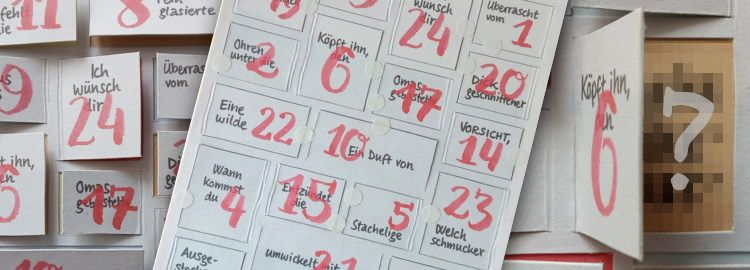

Auf dieser Website ist Platz für das, wofür mein Twitterprofil @charakterziffer nicht ausreicht. Mein Blog ist als Plus zu meinen Tweets gedacht, eben „@cz+“. // Die letzten drei Artikel:
Eigentlich hatte ich mir als guten Vorsatz für 2019 vorgenommen, jeden Tag ein bisschen Yoga zu betreiben (letztes Jahr: tägliche Erinnerungsverse). Ich habe mir Yoga auch bis Juni angeschaut und ausprobiert, bin damit aber nicht so richtig warm geworden. Darum habe ich mir ab Juli den neuen Vorsatz gemacht, täglich ein bisschen Brush Lettering zu üben, also dekoratives Schreiben mit einem Pinsel. Gut für euch, denn eines meiner Projekte war ein Adventskalender, den ich hier zum Selberbasteln veröffentliche.

Bastelanleitung
Für den Adventskalender benötigt ihr: einen Drucker, stärkeres Papier (A4, 200-300 g/m²), Kleber/Leim, Skalpell, Klebepunkte/Sterne o. ä.
Ladet euch unten die PDF-Vorlage herunter und druckt sie auf einem DIN-A4-Blatt im Querformat aus. Unbedingt darauf achten, das PDF in Originalgröße zu drucken, damit die Ränder passen. Bei den Druckereinstellungen also nicht „auf Druckbereich anpassen“ wählen, sondern Skalierung: 100%.
Klebt die Vorlage auf stärkeres Papier. Ich habe Leim zum Aufkleben verwendet, damit kann man den leichten Karton schön flächig einstreichen, bevor man die Vorlage aufklebt.
Tipp: Wer einen entsprechenden Drucker hat, kann sich den zweiten Schritt sparen und die Vorlage gleich auf stärkeres Papier ausdrucken. Mein recht normaler Drucker schafft Papier bis zu 180 g/m² – das hätte gerade so reichen können, ich habe aber lieber leichten Karton mit 300 g/m² verwendet.
Die Vorlage dann in der Mitte halbieren. Achtung, die Ränder der zwei Teilseiten sind unterschiedlich breit, evtl. ausmessen und mit Bleistift dünn vorzeichnen. Jetzt habt ihr zwei DIN-A5-Seiten, einmal mit den Türchen (blau, rote Zahlen) und eines mit der Füllung des Kalenders (farbige Felder mit den Pinsel-Wörtern).
Als mittelgut geübter Bastler habe ich für den folgenden, aufwändigsten Arbeitsschritt mehr als 20 Minuten gebraucht: Mit einem Skalpell die Türchen entlang der grauen Linien aufscheiden. Danach am Scharnier entlang streichen/nuten (mit Messerrücken, Brieföffner, Falzbein etc.) und die Türchen vorfalten – so öffnen sie sich später leichter.
Nun den Rand und die dünnen Stege zwischen den Türchen auf der Rückseite mit Kleber einstreichen. Vorsichtig auf das Blatt mit der Kalender-Füllung legen und festkleben.
Bei recht dickem Papier bleiben die Türchen (fast) von selbst zu, man kann den Kalender dazu unter einem Stapel Bücher pressen. Besser aber, ihr verschließt die Türchen mit kleinen Klebepunkten oder Sticker-Sternen.
Seliges Nichtwissen
Durch das Basteln wisst ihr nun leider schon, was sich hinter den Türchen versteckt … Entweder müsst ihr also ein Jahr warten und hoffen, dass ihr’s bis dahin vergessen habt – oder ihr verschenkt den Adventskalender an eine:n Freund:in.
Solltet ihr selbst einen Kalender von mir geschenkt bekommen haben, schaut euch die folgende Vorlage lieber erst nach dem 24. Dezember an. Alle anderen können meinen Brush-Lettering-Adventskalender hier herunterladen:
Etwas teilen heißt sich kümmern – so könnte man die Überschrift frei übersetzen. Der Spruch wird meist im Zusammenhang mit dem Internet gebraucht und bedeutet: Wer einen Inhalt weiterverteilt, kümmert sich.
Um wen man sich beim Teilen kümmert? Na, zum einen um den Autoren oder die Autorin eines Textes. Wenn ich einen Artikel verbreite und andere Leser:innen darauf hinweise, verschaffe ich dem Text und seinen Autor:innen mehr Aufmerksamkeit. Zum zweiten kümmere ich mich (hoffentlich) auch um diejenigen, denen ich den Artikel weiterleite. Sie könnten den Inhalt ebenfalls nützlich oder unterhaltsam finden.
In Zeiten von Social Media habe ich allerdings manchmal den Eindruck, dass das „Caring“ (Sorgfalt, Achtsamkeit) beim Teilen nicht mehr so wichtig ist. Auf Facebook, Twitter & Co werden zu oft Inhalte verbreitet, die aufwühlen, empören, verspotten, manipulieren oder beleidigen. Macht es uns Menschen so viel Spaß, gehässig zu sein?
Sich kümmern bedeutet übrigens auch: Verantwortung übernehmen. Wer einen hasserfüllten Inhalt teilt, muss dafür auch gerade stehen. Vielleicht empfiehlt es sich, Inhalte vor dem Teilen erst einmal nach Wahrheit, Güte und Notwendigkeit zu filtern – siehe Die drei Siebe des Sokrates.
Meine erfundenen Fakten
Meine Twitterserie „Erfundenes Faktum“ fliegt bei dieser Filterung übrigens raus, denn die Tweets der Serie sind zwar gut und vielleicht sogar notwendig, aber keinesfalls wahr. Ihr solltet sie also nicht weiterverbreiten ;-)
⛽ Erfundenes Faktum № 91: Wegen des teuren Benzins stehen derzeit viele Pumpen still, die sonst für ausreichend hohe Flusspegel sorgen. (#)
🛠 Erfundenes Faktum № 92: Damit auch Frauen mit Schlagbohrschraubern zurechtkommen, gibt’s diese jetzt in modischem Zartrosa. [tatsächlich wahr] (#)
𝒞 Erfundenes Faktum № 93: Im richtigen Verhältnis gemischt ergeben Quitte und Fenchel den Geschmack von Cola. Aus Kostengründen enthält die geheime Formel aber stattdessen Cassia-Zimt. (#)
✴ Erfundenes Faktum № 94: Immerhin 24% der Deutschen laden nur deshalb Freunde zu sich nach Hause ein, um sich zum Putzen zu motivieren. (#)
⇤ Erfundenes Faktum № 95: Im Zweifelsfall stehen Hotelbetten mit der linken Seite zur Wand, weil das die Wahrscheinlichkeit verringert, dass der Gast mit dem linken Fuß zuerst aufsteht. (#)
℃ Erfundenes Faktum № 96: Museumsräume sind weltweit leicht unterkühlt, um ein ehrfürchtiges Erschauern vor den Kunstwerken zu fördern. (#)
🞯 Erfundenes Faktum № 97: Schriften mit geringer Strichstärke (z.B. Helvetica Thin; Source Sans Pro Light) eignen sich hervorragend für Lesetexte, weil sie die Netzhaut weniger belasten. Besser sind nur noch komplett durchsichtige Buchstaben. (#)
ꤐ Erfundenes Faktum № 98: Wer weiß, wie dieser Satz in seinem tatsächlichen Sinn zu verstehen ist, erlangt tiefere Einsichten. (#)
📅 Erfundenes Faktum № 99: Mit folgendem Test findet jeder, der sich besonders gut selbst einschätzen kann, seinen wahren Geburtstag: Wie gutgläubig bist du (auf einer Skala von 1 bis 366)? (#)
∀ Erfundenes Faktum № 100: Um lesenswerte Beiträge zu fördern, filtern die Algorithmen sozialer Netzwerke nach Wahrheit, Güte und Notwendigkeit. […] (#)
Gestern habe ich von einem Casting in einem Einkaufszentrum gelesen. Dort macht eine große Produktionsfirma Station und sucht neue Talente fürs Kino und Fernsehen. Teilnehmende können sich auf einer Bühne präsentieren, sich in die Datenbank der Produktionsfirma eintragen lassen und dann beispielsweise in einer Quizshow mitmachen, Serienrollen ergattern, Teil von Talentshows sein oder ihre Geschichte in einer Doku-Sendung erzählen.
Mir persönlich fehlt ja völlig der Anreiz, bei so einem Casting mitzumachen. Warum sollte ich? Warum machen da überhaupt Leute mit? Oder anders formuliert und etwas verallgemeinert: Warum wollen Menschen berühmt werden?
Dass Menschen berühmt werden wollen, ist offensichtlich. Sonst würden bei den Talentshows im Fernsehen nicht so viele Leute mitmachen. Ich mag solche Shows nicht besonders. Jury-Mitglieder und Publikum erheben sich mit ihrem Urteil über hoffnungsvolle Bewerber:innen und stellen unbedarfte Teilnehmende bloß; bei der Bewertung zählen Oberflächlichkeiten und Mainstream-Kompatibilität. Ich empfinde dabei vor allem Fremdscham, Mitleid und Unverständnis.
Warum berühmt sein wollen?
Vielleicht ist es die Suche nach Bestätigung. Wer sich über die eigenen Qualitäten nicht sicher ist, fühlt sich vermutlich besser, wenn einem ein Publikum zujubelt, was für ein toller Mensch man doch ist. In kleinerem Maßstab kann ich das ein Stück nachvollziehen. Auch ich freue mich, wenn ich ein Kompliment bekomme, mir jemand sagt, wie sehr er mich mag oder dass ich etwas prima gemacht habe. Für mich ist aber sehr entscheidend, von wem eine solche Bestärkung kommt. Applaus von einer anonymen Menge ist mir weit weniger wichtig als ein nettes Wort von guten Freund:innen.
Oder erhoffen sich Menschen ein besseres Leben, wenn sie berühmt sind? Mehr Geld und mehr Möglichkeiten; besondere Aufmerksamkeiten und Privilegien, die nicht jede:r hat? Ich befürchte eher, dass sich Berühmtheiten ständig als gutes Vorbild beweisen müssen, sich keine Skandale erlauben können (oder was „die Öffentlichkeit“ dafür hält), dass jede Kleinigkeit des Privatlebens kommentiert wird, man bei Selfie-Anfragen immer lächelnd mitmachen muss und von wildfremden Leuten in seltsame Gespräche verwickelt wird. Hört sich für mich recht anstrengend an.
Oder ist die Absicht hinter einem berühmten Leben, dass man nicht völlig unbedeutend in Vergessenheit gerät, sondern etwas hinterlässt, bevor man stirbt? Das gute Gefühl, dass das eigene Leben irgendwie wichtig war? Ein besonderer Mensch gewesen zu sein? Also, ich weiß nicht, ob man dazu berühmt gewesen sein muss.
Ja, aber du doch auch!
Wenn ich etwas länger darüber nachdenke und die Definition von Berühmtheit etwas weiter fasse, muss ich zugeben, dass ich selbst doch irgendwie auch nach Berühmtheit strebe. Oder es zumindest so aussehen kann. Ich freue mich über Retweets, die meine Tweets verbreiten; ich schreibe diesen Blog und will natürlich auch gelesen werden. Bei zweien meiner Hobbys stehe ich sogar auf der Bühne – und das tut man doch nur, wenn man Applaus sucht, oder nicht?
Ich würde dem entgegnen, dass es bei meinen Tweets mehr um Inhalte geht, nicht um meine Person. Bei meinem Blog ist es so ähnlich, man findet hier nicht mal ein Foto von mir und mit privaten Angaben halte ich mich sehr zurück. Meine Hobbys übe ich eher aus, weil ich gerne mit anderen Menschen ein Projekt umsetze, dass sich andere gerne ansehen. Das macht mir Freude und im Mittelpunkt stehe ich dabei auch nicht.
Vielleicht ist es bei vielen anderen Berühmtheiten ja ähnlich: Sie glauben, der Öffentlichkeit etwas zu sagen zu haben, möchten andere unterhalten oder haben einfach Spaß an ihrer Tätigkeit. Vielleicht steckt der gar nicht so egoistische Wunsch dahinter, die Welt ein bisschen schöner zu machen. Erkenntnis für mich: Vermutlich sind Leute, die ein Publikum suchen, weniger selbstsüchtig und bestätigungsheischend als ich annehme.
Und alle, denen dazu noch etwas einfällt, haben im Kommentarbereich nun die Möglichkeit, der Welt ihre Gedanken mitzuteilen, sich mit eigenen Worten in die Öffentlichkeit zu begeben und bestimmt ganz schrecklich berühmt zu werden :-)
Das Wort kombiniert Persönlichkeit (Charakter) mit Sachlichem (Ziffer). Zusammengesetzt ergibt sich ein Synonym für Mediävalziffer, eine Zahlenvariante mit Ober- und Unterlängen.
Schriftarten dieses Blogs
Wenn dein Browser eingebettete Schriften (WOFF/WOFF2) unterstützt, dann liest du die Fließtexte hier in der Source Sans Pro von Paul D. Hunt, erschienen 2012 bei Adobe.
Die Überschriften sind aus der czSlab gesetzt, die ich für dieses Blog gestaltet habe. Sie orientiert sich an Yanones viel ausgefeilterer Antithesis von 2014.
§ 1 Externe Links · Dieses Blog verlinkt auf Websites Dritter. Zum Zeitpunkt der erstmaligen Verlinkung waren dort keine Rechtsverstöße ersichtlich. Da ich keinen Einfluss auf fremde Websites habe, kann ich für deren Inhalte und Gestaltung keine Haftung übernehmen. Sollte ich von Rechtsverstößen erfahren, entferne ich die Verlinkung unverzüglich. Eine ständige Kontrolle der externen Links ist ohne konkrete Hinweise aber nicht zumutbar.
§ 2 Datenschutzerklärung · Mir ist der Schutz deiner Daten sehr wichtig. Deshalb verzichte ich auf Cookies, vermeide möglichst Dienste von Drittanbietern und erhebe so wenige Daten wie es geht. Diese Website kann ohne die Angabe persönlicher Daten genutzt werden.
Die einzige Ausnahme sind Kommentare. Wenn du einen meiner Texte kommentierst, bekomme ich die eingegebenen Daten und eine Zeitangabe per (prinzipiell unsicherer) E-Mail zugestellt. Falls dein Kommentar sachlich zur Diskussion beiträgt, ergänze ich ihn öffentlich sichtbar unter dem entsprechenden Artikel. Dabei sind sämtliche Angaben freiwillig (Name, Website, Mailadresse, Kommentar) – auch anonyme Kommentare sind möglich.
§ 3 Widerspruch gegen Direktwerbung · Die Verwendung meiner Kontaktdaten zur gewerblichen Werbung ist ausdrücklich nicht erwünscht; ich widerspreche hiermit jeder kommerziellen Nutzung und Weitergabe meiner Daten (gemäß § 21 DSGVO). // Über private Fanpost freue ich mich allerdings sehr und antworte darauf mit großem Vergnügen!
 @charak
@charak